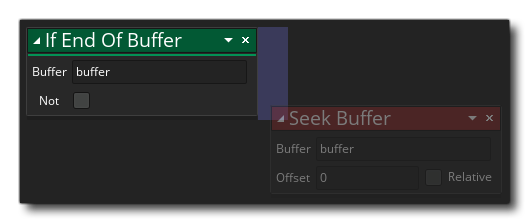

If End Of Buffer If End Of Buffer
If End Of Buffer If End Of Buffer Esta acción se puede usar para verificar si la posición de lectura / escritura ha llegado al final del búfer. Usted proporciona el valor único de ID de buffer devuelto por la acción Create Buffer y luego la acción volverá true si la posición de lectura / escritura ha llegado al final de todos los datos disponibles en el búfer, o false si no es así Puede marcar "no" para comprobar la acción si la posición de lectura / escritura no está al final del búfer.
Tenga en cuenta que para agregar acciones al bloque "if", deben soltarse al lado de la acción, como se muestra en la imagen siguiente: 
Argumento Descripción Buffer El índice del buffer (almacenado en una variable)
El código de bloque de acción anterior crea una lista de DS en la instancia y luego recorre los datos dentro del buffer dado leyendo los datos y agregándolos a la lista. Esto continúa hasta que se alcanza el final del búfer en cuyo momento el bucle está roto.